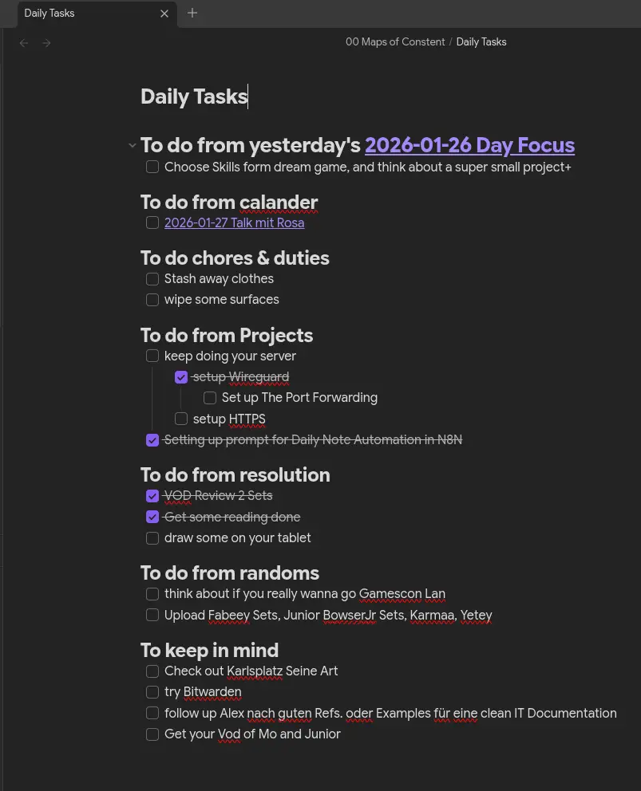

A self-hosted n8n workflow that rebuilds an Obsidian daily todo file every morning at 5 AM — pulling from Dropbox, parsing Markdown, filtering calendar events, and computing chore schedules automatically.
Every morning, this workflow wakes up at 5 AM and rebuilds your Obsidian Daily Tasks.md file from scratch. It reads yesterday's file, extracts all unfinished tasks, checks your calendar for today's events, calculates which chores are due based on a repetition schedule, and assembles a fresh structured note — then archives the original.
The result: you open Obsidian and your day is already organized, with zero manual setup.
The output is a clean, structured Obsidian note — assembled automatically every morning before you wake up.

13 nodes. One trigger. Zero manual work.
The workflow consists of 13 nodes built and tested step by step. Each node has a single clear responsibility.
The rebuilt file follows exact rules per section header. These were defined upfront and implemented precisely in the Rebuild node.
| Header | Rule |
|---|---|
| # To do from yesterday's | Rollup of all unchecked items from yesterday's, calendar, chores & duties, and randoms. Header date link updated to [[YYYY-MM-DD Day Focus]]. |
| ## To do from calander | Replaced entirely with today's matching calendar events formatted as - [ ] [[Filename without .md]]. Empty if no matches. |
| ## To do chores & duties | Replaced with today's due chores from chores.json. A chore is due if lastDone + (repetition × 1 day) ≤ today midnight epoch. |
| ## To do from Projects | Copied exactly as-is. Full preservation of nesting, tabs, indentation, and all checkbox states. |
| ## To do from resolution | Copied but all checkboxes force reset to [ ] regardless of prior state. |
| ## To do from randoms | Completely emptied. No content carried forward. |
| ## To keep in mind | Copied exactly as-is. No changes whatsoever. |
The workflow was built node by node, testing each step before moving to the next. Several unexpected challenges came up along the way.
Before writing any code, the complete pipeline was mapped out including all data dependencies between nodes.
Dropbox returns files as binary. n8n 2.8.3 with filesystem binary mode blocks this.helpers.getBinaryDataBuffer in the task runner sandbox. Solution: use an Extract from File node before any Code node touches it.
Since each Dropbox node resets the JSON context, Merge (Append) nodes were used throughout to combine date data, markdown content, calendar results, and chore data into single items.
Regex-based section splitting failed due to double-escaping when embedded in JSON. Replaced with a simple indexOf approach — immune to escaping issues and easier to debug.
Rather than relying on fixed item indices, all Code nodes use items.find(i => i.json.sections !== undefined) to locate the correct item regardless of merge order.
The chores.json file contained control characters causing JSON.parse to throw at position 729. Fixed with a pre-parse strip of the \x00-\x1F range.
This workflow removes the daily friction of setting up a todo list. Tasks that weren't done yesterday automatically roll forward. Calendar events appear without manual entry. Chores surface only when they're actually due. The daily note in Obsidian becomes a living, auto-maintained document rather than a blank slate every morning.
The modular node-by-node approach also means any section rule can be changed independently — add new sections, change the chore logic, or swap calendar sources with minimal refactoring.